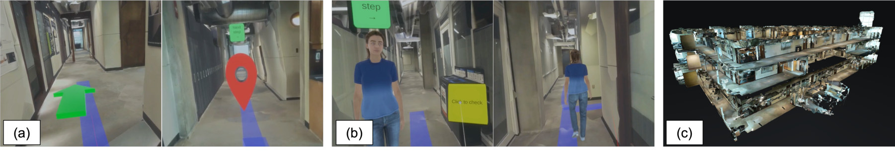

Abstract
In this paper, we explore how navigation performance and experience in a real-world indoor environment is impacted after learning the route from various guide cues in a replicated immersive virtual environment. A guide system, featuring two distinct audiovisual guide representations—a human agent guide and a symbol-based guide—was developed and evaluated through a preliminary user study. The results do not show significant differences between the two guide conditions, but offer insight into the user-perceived confidence and enjoyment of the real-world navigation task after experiencing the route in immersive virtual reality. We discuss the results and direction of future research.